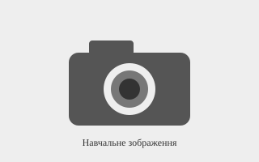

Canon EOS R50

Canon EOS R50 — компактний бездзеркальний фотоапарат для фотографування та створення відео. Він підходить для навчання фотографії, подорожей і повсякденного використання.
| Характеристика | Значення |
|---|---|
| Тип | Бездзеркальний фотоапарат |
| Роздільна здатність | 24,2 Мп |
| Відео | 4K |
| Бренд | Canon |
Дата створення опису: